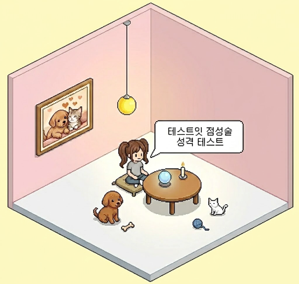

테스트잇
성격
얼굴
그외
사주

테스트 시작하기
정보 입력
─
□
×
날짜 및 시간
생년월일
태어난 시간
시간 모름
정확한 결과를 위해 태어난 시간을 입력하는 것이 좋음.
지역 검색
지역명
지역명을 검색해서 선택해 주세요.
결과 보기
결과를 찾으러 뚜벅뚜벅 가는 중...
행성 좌표를 불러오는 중...
테스트잇 점성술 성격 테스트
─
□
×
01
성격의 본질
02
감정 반응
03
사고방식과 소통
04
연애와 매력
05
스트레스 반응
06
활동 방향
다시 해보기
다른 테스트 해보기
테스트 공유하기